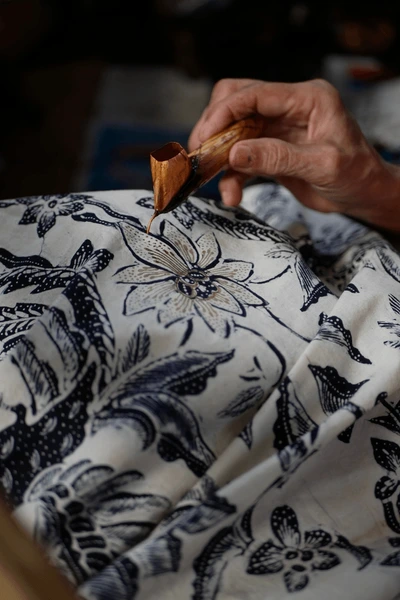
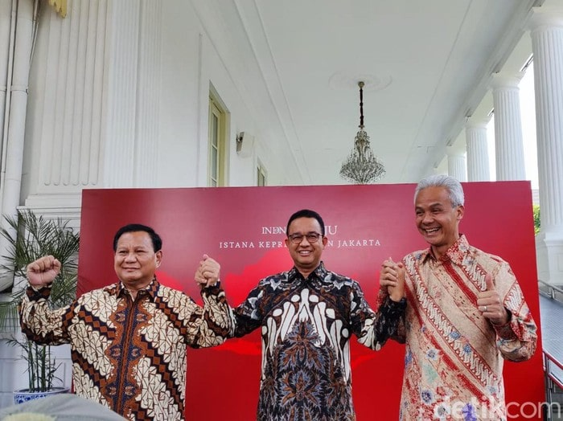
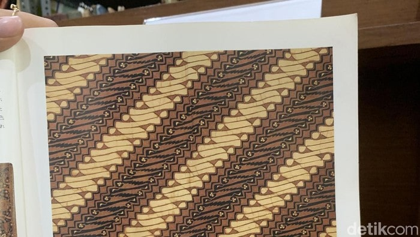
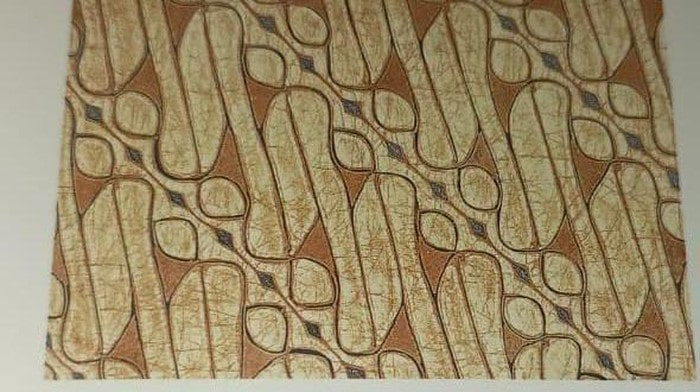
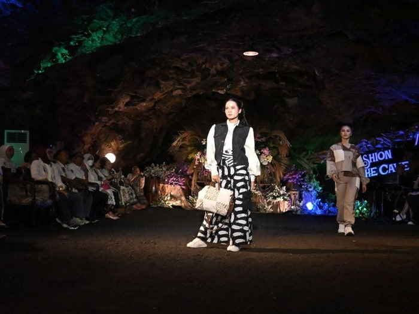

WAWASAN
BATIK

Apa itu Batik?
Batik adalah hasil karya bangsa Indonesia yang merupakan perpaduan antara seni dan teknologi oleh leluhur bangsa Indonesia. Batik Indonesia dapat berkembang hingga sampai pada suatu tingkatan yang tak ada bandingannya baik dalam desain/motif maupun prosesnya. Corak ragam batik yang mengandung penuh makna dan filosofi akan terus digali dari berbagai adat istiadat maupun budaya yang berkembang di Indonesia. Motif Batik menurut Kamus Besar Bahasa Indonesia, motif adalah corak atau pola. Motif adalah suatu corak yang di bentuk sedemikian rupa hinga menghasilkan suatu bentuk yang beraneka ragam.
Motif batik adalah corak atau pola yang menjadi kerangka gambar pada batik berupa perpaduan antara garis, bentuk dan isen menjadi satu kesatuan yang mewujudkan batik secara keseluruhan. Motif-motif batik itu antara lain adalah motif hewan, manusia, geometris, dan motif lain. Motif batik sering juga dipakai untuk menunjukkan status seseorang. Membatik merupakan tradisi turun-menurun. Karena itu, sering motif batik manjadi ciri khas dari batik yang diproduksi keluarga tertentu (Wikipedia, 2015).


{kind=link}
{kind=link}
{kind=link}
{kind=link}
Artikel
Berita

Meski Tak Janjian, Anies-Ganjar-Prabowo Kompak Pakai Batik Ketemu Jokowi
Senin, 30 Okt 2024 14:14 WIB
Pertemuan Jokowi dengan ketiga capres dimulai sekira pukul 12.30 WIB tadi. Terlihat, Ganjar sendiri mengenakan kemeja batik dengan warna dominan merah. Prabowo Subianto mengenakan kemeja batik warna cokelat. Lalu Baca selengkapnya...

Mitos di Balik Batik Parang, Simbol Hubungan Raja Mataram dan Ratu Selatan
Senin, 23 Okt 2024 15:32 WIB
Batik motif Parang ternyata bukan sekadar pola, melainkan juga memiliki jejak sejarah dari zaman Keraton Mataram. Batik Parang menggambarkan keindahan hubungan antara manusia Baca selengkapnya...

Perjalanan Batik: Dari Busana Raja hingga Kini Dipakai Masyarakat Biasa
Selasa, 24 Okt 2024 11:00 WIB
Batik yang merupakan seni kain khas Indonesia, sudah menjadi bagian tak terpisahkan dari budaya dan identitas bangsa ini. Pada zaman dahulu, batik adalah simbol eksklusivitas Baca selengkapnya...

Unik, Fashion Show Batik Purbalingga Digelar di Dalam Gua Lawa
Minggu, 29 Okt 2024 21:29 WIB
Pemerintah Kabupaten Purbalingga menggelar Fashion Show bertema Amazing Golaga Festival. Uniknya, acara ini diadakan di dalam Gua Lawa Purbalingga. Baca selengkapnya...Kontak
Hubungi Kami